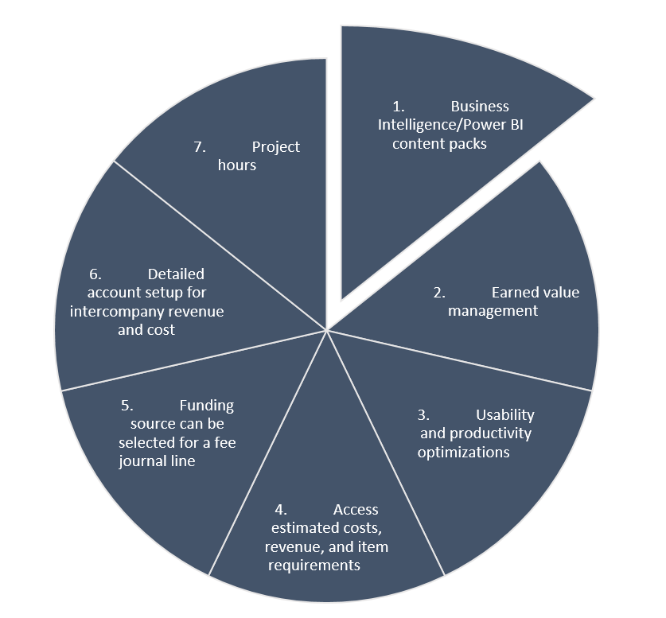
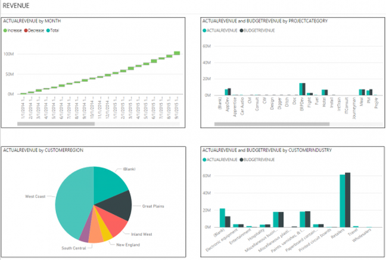

BLOG
 What’s new in Project accounting and management in Microsoft Dynamics 365 for Operations
What’s new in Project accounting and management in Microsoft Dynamics 365 for Operations
July 1, 2017|Real Dynamics Team
Project accounting is a unique practice; like cost accounting or nonprofit accounting, it has complexities an accountant may never have heard of while earning a CPA.
Among them is earned value management, a practice common to professional services firms, like architectural, engineering and construction (AEC) firms, and software development companies. The idea is to measure the value you have generated for the client versus the budget you have or have not spent. For example, an architectural design produces considerable value, even if it is early in a project lifecycle and lower cost than construction work.
While there are specialized project accounting solutions for a range of industries, Dynamics 365 for Operations also offers rich project functionality, and the rest of this article will explore some of the most important areas.
Business Intelligence/Power BI content packs
With the Power BI content pack for Project management and accounting, practice and project managers have quick access to project-related data and key performance indicators (KPIs), including cost, revenue, and hours analysis.
The Power BI content pack also includes earned value management KPIs, such as cost report, revenue report, Cost performance index and Schedule performance index (see graphics).
This Power BI report uses the same tables and views used by the Project management cube available in Microsoft Dynamics AX, however, the underlying data model and relationships have been built to enable easy customizations to calculations as well as modifications to existing reports.
Using the Power BI desktop tool, a power user can easily define new calculations or modify existing calculations. They can also easily create new reports or modify existing ones.
Earned value management
The Earned value management page contains a set of key performance indicators (KPIs) that indicate earned value for each project. In addition, Cost performance and Schedule performance indexes are shown for each project. Values below 1 are shown in red. Values above 1 are displayed in green. The KPIs are calculated using formulas defined within the Power BI content and they can be easily customized by a power user to reflect the needs of your organization.
Usability and productivity optimizations
The following usability improvements have been made to the Project management and accounting:
- A work breakdown structure (WBS) ID and task name have been added to Hour, Expense, Item, Fee, and On-account forecast forms.
- An option to clear selections on resource forms, including Resource availability and Resource fulfillment.
- Ability to create a resource without having to select if it will be associated with an employee or contractor first.
- The option to use multi-select on various setup forms (prices, delegates, journal names, etc.).
- Visible cost prices are now related to the date of a task when resources are booked.
- The Resource availability form now considers efficiency.
- The project manager selected is automatically added to the team roster.
- Timesheet workflow status is reset if workflow and document status are out of synch.
- Ability to display detailed task information for resource requests that span multiple tasks is included.
Access estimated costs, revenue, and item requirements
Cost and revenue estimates, as well as item requirements for a specific work breakdown structure task, can be managed on the Details form for the project work breakdown structure task.
Funding source can be selected for a fee journal line
If the contract for a project contains multiple funding sources, a specific source can be selected when posting fees. If no specific funding source is selected, the funding rules specified on the contract are used to allocate the fee.
Detailed account setup for intercompany revenue and cost
Lending legal entity field has been added to the setup for intercompany costing. This allows posting intercompany costs to different main accounts per legal entity. Borrowing legal entity and Category options have been added to intercompany revenue setup to enable posting intercompany revenue to different main accounts per legal entity and category.
Project hours
Project hours now shows resource and project related hours that have been associated with each project.
sing this report, one can identify billable as well as non-billable hours by the resource. The report enables calculation utilization of resources and identify resources and projects where utilization goals are not being met.
Late selection option when posting invoice proposals in a batch
Project accountants can set up batch jobs to automatically pick up invoice proposals for posting if the proposals fulfill criteria specified on the batch job by selecting the option for Late selection when in the periodic process to Post project invoice proposals. This helps simplify the automatic posting of invoices.
Vendor prepayments in fixed-price project estimates
For project purchase orders, prepayments must be processed to release payment to vendors. These prepayment invoices are now available in the project estimation and recognition process for fixed-price projects.
Project resourcing enhancements
Project resource management functionality in Dynamics 365 for Operations has been significantly updated and improved to include the following:
- A resource concept for project resource management. In previous releases, workers were used as project resources. Now operational resources are used as project resources. It is still possible to set a worker as a project resource in the Worker form, but now the system will automatically create an operational resource for this worker.
- The ability to define the default resource role.
- The project concepts of planned resources and auto-generating the project team.
- New capabilities to define project role-based pricing.
If you have any question contact us on info@realdynamics.com
Recent post
-
How-to: Bring your own data warehouse to Microsoft Dynamics 365 for Operations
September 1, 2017| Real Dynamics Team
-
What’s new in Microsoft Dynamics 365 for Operations, Part 2: Warehousing and mobile
August 1, 2017| Real Dynamics Team
-
What’s new in Microsoft Dynamics 365 for Operations – Supply Chain
June 1, 2017| Real Dynamics Team
-
What's new in Microsoft Dynamics 365 for Operations - Financials, Part 3
May 1, 2017|Real Dynamics Team
-
What's new in Microsoft Dynamics 365 for Operations - Financials, Part 2
April 1, 2017| Real Dynamics Team
-
Microsoft Dynamics AX Company Split
March 3, 2017| Real Dynamics Team
-
What's new in Dynamics 365 for Operations (AX7) - Financials, Part 1
February 1, 2017| Real Dynamics Team
-
Budgeting Capabilities in New Microsoft Dynamics AX (Dynamics 365)
January 1, 2017| Real Dynamics Team